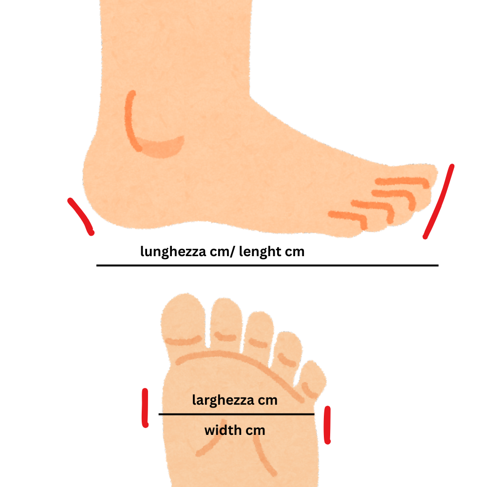

Ciao! Questo è un calcolatore per farti trovare la taglia corretta della scarpa per tutte le tue attività sportive come running, trail running, nordic walking e trekking! Va bene anche per le scarpe da Basket, Volley e Tennis!
Per far sì che la scelta della taglia per l'acquisto della tua scarpa sia corretta, verifica che almeno due dei tre valori che escono dal risultato corrispondano nelle misure fornite dall'azienda della scarpa che vuoi acquistare! Esempio: se devi acquistare una Nike e il risultato che esce dal tuo calcolo è EU 42, UK 8, US 8.5, devi avere almeno due di queste tre taglie che corrispondono!
Molto semplice! Prendi un foglio grande più del tuo piede, metti il tuo piede sopra il foglio. Ora disegna la sagoma del tuo piede e con un righello o un metro misura la distanza maggiore dal tallone al tuo dito più lungo. Fai la stessa cosa misurando la distanza tra l'inizio del primo e il quinto metatarso. Ora inserisci le misure che hai ottenuto di lunghezza e larghezza.
Devi misurare entrambi i piedi! Solitamente uno dei due è più lungo. Devi inserire la lunghezza e la larghezza del piede più lungo!
